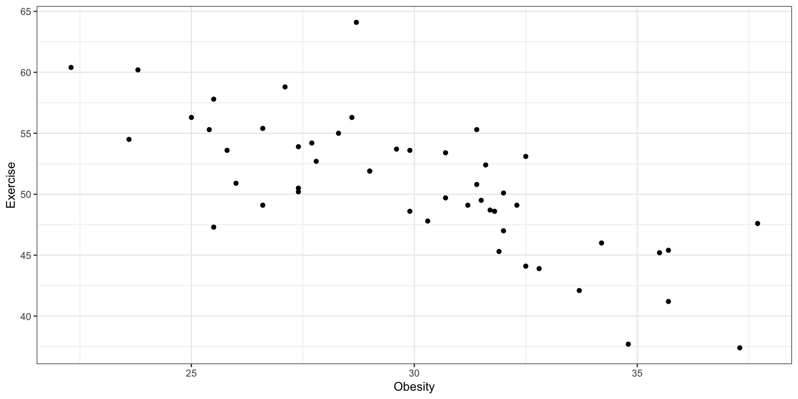
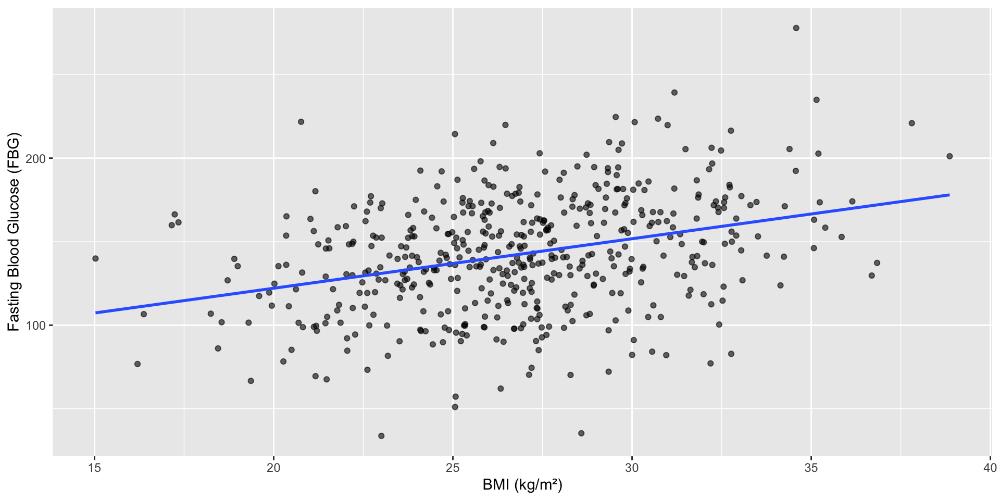
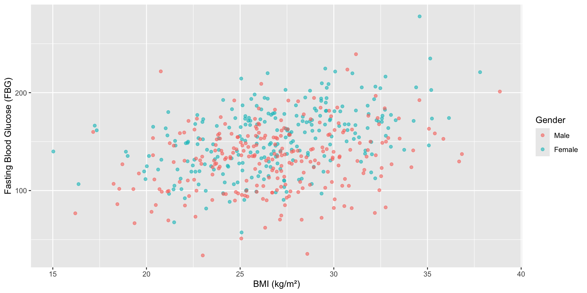
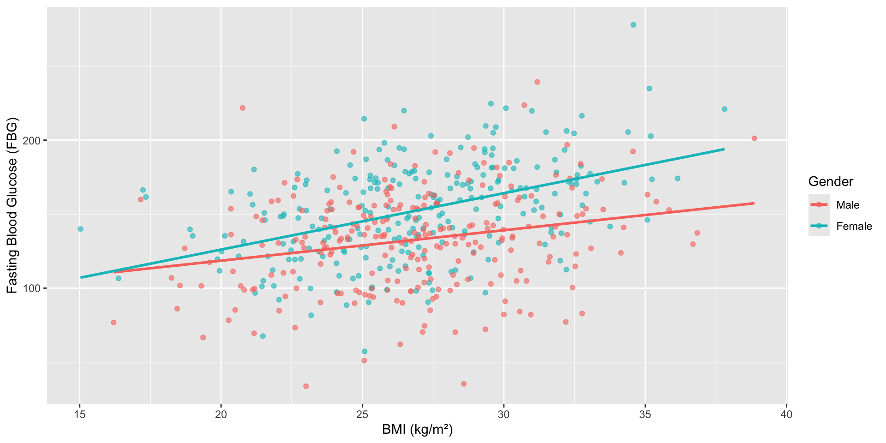

Lecture 14: Multiple Linear Regression & Collinearity
BIOS 600 - Summer Session II 2026
Announcements
HW 13 due tonight
HW 14 due tomorrow
Thursday’s lecture will be review for the final exam, which is July 27th
Reading
P&G: Chapter 19
OI: 9.1 and 9.3
Overview
Regression with multiple explanatory variables
Interpreting categorical variables, plus releveling factors
Interactions & how to interpret interaction terms
Checking for multicollinearity
Computational setup
Back to Lab 02
In Lab 2 we examined the regression of obesity percentage on adequate exercise percentage.

Do we think this is the only factor that can help us predict obesity percentage?
Multiple regression
The multiple regression model extends the simple linear regression model by incorporating more than one explanatory variable.
The assumptions are similar to those of the simple linear regression model. This type of model is often called a multivariable (not multivariate) model.
Multiple regression is often used to control for confounders or predictors that explain variability in the response:
Knowing a state has above average exercise percentage might tell you something about the obesity percentage
If you also knew that state’s HDI category, you might be able to do even better!
Multiple regression
Importantly, accounting for multiple predictors allows us to address potential confounding.
We are looking at relationships while holding others constant - for instance, we know that exercise percentage and HDI category might be correlated. Perhaps any associations between obesity and exercise percentage we see are actually driven by HDI category.
Multiple regression
By fitting a multiple linear regression model, we can look at associations between obesity and exercise percentage while holding HDI constant (that is, at each possible value of HDI, what is the “remaining relationship” between exercise and obesity percentage?).
Similarly, we can also look at associations between HDI and obesity while holding exercise constant (that is, at each possible value of exercise %, what is the “remaining relationship” between HDI and obesity percentage?).
Multiple regression
The model is given by
\[y_i = \beta_0 + \beta_1 x_{1i} + \beta_2 x_{2i} + \cdots + \beta_p x_{pi} + \epsilon_i\]
\(p\) is the total number of predictor or explanatory variables
\(y_i\) is the outcome (dependent variable) of interest
\(\beta_0\) is the intercept parameter
\(\beta_1, \beta_2, \cdots, \beta_p\) are the slope parameters
\(x_{1i}, x_{2i}, \cdots, x_{pi}\) are predictor variables
\(\epsilon_i\) is the error (like the \(\beta\)s, it is not observed)
Assumptions are essentially the same as in simple linear regression.
Multiple regression
Consider the model
\[Obesity_i = \beta_0 + \beta_1 Exercise_i + \beta_2 Smoking_i + \epsilon_i\]
Parameter Meaning
What might the parameters \(\beta_0\), \(\beta_1\), and \(\beta_2\) represent?
Multiple regression
Call:
lm(formula = Obesity ~ Exercise + Smoking, data = cdc)
Residuals:
Min 1Q Median 3Q Max
-3.6884 -1.4006 0.1385 1.3435 3.6176
Coefficients:
Estimate Std. Error t value Pr(>|t|)
(Intercept) 36.10015 3.86311 9.345 2.72e-12 ***
Exercise -0.30899 0.05579 -5.538 1.34e-06 ***
Smoking 0.54249 0.08716 6.224 1.23e-07 ***
---
Signif. codes: 0 '***' 0.001 '**' 0.01 '*' 0.05 '.' 0.1 ' ' 1
Residual standard error: 1.837 on 47 degrees of freedom
Multiple R-squared: 0.7546, Adjusted R-squared: 0.7442
F-statistic: 72.28 on 2 and 47 DF, p-value: 4.572e-15Multiple regression: kable
| term | estimate | std.error | statistic | p.value |
|---|---|---|---|---|
| (Intercept) | 36.100 | 3.863 | 9.345 | 0 |
| Exercise | -0.309 | 0.056 | -5.538 | 0 |
| Smoking | 0.542 | 0.087 | 6.224 | 0 |
How might we interpret these parameter estimates? (watch out for the scale!)
Interpretation
- Interpreting \(\hat{\beta_1}\): For every one percent increase of adults who participated in at least 2.5 hours of aerobic activity per week, we expect the percent of adults who are obese to decrease by .308 of a percentage point on average, holding Smoking constant.
Your turn
Use the interpretation above to write out an interpretation of \(\hat{\beta_2}\). Recall that the Smoking variable is defined as percent of adults in region who smoked at least one cigarette in the past month.
Hypotheses of interest
Hypotheses of interest may include hypotheses for single parameters:
- For instance, \(H_0:β_1=0\) vs. \(H_1:β_1≠0\). In our previous model, this would test whether there is a linear association between exercise % and obesity %, while controlling for smoking %
This is tested using a t-test with \(n−k\) degrees of freedom, where \(n\) is the number of observations in the model and \(k\) is the number of estimated model parameters (including the intercept and all slope terms).
Hypotheses of interest
Say we were to test this hypothesis for our model. What might we conclude?
| term | estimate | std.error | statistic | p.value |
|---|---|---|---|---|
| (Intercept) | 36.100 | 3.863 | 9.345 | 0 |
| Exercise | -0.309 | 0.056 | -5.538 | 0 |
| Smoking | 0.542 | 0.087 | 6.224 | 0 |
In this case, the p-value was lower than the pre-specified significance cut-off. There is sufficient evidence to suggest that, controlling for smoking %, there is a non-zero linear association between exercise % and obesity % by state.
Hypotheses of interest
We might also test multiple parameters at once (for instance, all the slopes):
- \(H_0: \beta_1 = \beta_2 = 0\) vs. \(H_1:\) at least one of the \(\beta_k\) is not 0. (variable has a linear association with exercise %)
This is given by an F test (much like ANOVA!) with numerator df equal to the number of parameters being tested (here, the number of slopes, i.e. 2) and denominator df equal to \(n−k\) (number of observations minus number of estimated model parameters, including the intercept).
What might we conclude for the overall F test for our model, assuming \(\alpha = 0.05\)?
F-test
This information is given in the original summary(model):
Call:
lm(formula = Obesity ~ Exercise + Smoking, data = cdc)
Residuals:
Min 1Q Median 3Q Max
-3.6884 -1.4006 0.1385 1.3435 3.6176
Coefficients:
Estimate Std. Error t value Pr(>|t|)
(Intercept) 36.10015 3.86311 9.345 2.72e-12 ***
Exercise -0.30899 0.05579 -5.538 1.34e-06 ***
Smoking 0.54249 0.08716 6.224 1.23e-07 ***
---
Signif. codes: 0 '***' 0.001 '**' 0.01 '*' 0.05 '.' 0.1 ' ' 1
Residual standard error: 1.837 on 47 degrees of freedom
Multiple R-squared: 0.7546, Adjusted R-squared: 0.7442
F-statistic: 72.28 on 2 and 47 DF, p-value: 4.572e-15Hypotheses of interest
Conclusion: In this case, the p-value (4.572e-15) was lower than the pre-specified significance cut-off. There is sufficient evidence to suggest that at least one predictor (Exercise and/or Smoking) has a non-zero linear association with obesity %.
Example: Is SBP associated with cognitive scores
There is reason to believe that systolic blood pressure (SBP) is associated with lower cognitive scores in older adults
However, both SBP and cognitive scores are associated with age
Let’s look at the results of running this model: \[CognitiveScore_i = \beta_0 + \beta_1 SBP_i + \varepsilon_i\]
Example: Is SBP associated with cognitive scores?
In small groups
Do both parameter estimates (\(\hat{\beta}_0\), \(\hat{\beta}_1\))make sense to interpret here? If so, how would you interpret each one?
| term | estimate | std.error | statistic | p.value |
|---|---|---|---|---|
| (Intercept) | 49.297 | 7.518 | 6.557 | 0 |
| SBP | 0.309 | 0.070 | 4.427 | 0 |
Example: Confounding
- Here is the correlation matrix for SBP, cognitive score, and age:
SBP CognitiveScore Age
SBP 1.0000000 0.4082618 0.6637731
CognitiveScore 0.4082618 1.0000000 0.4830672
Age 0.6637731 0.4830672 1.0000000We see that age is correlated to both of our other variables!
Let’s look at this model: \[CognitiveScore_i = \beta_0 + \beta_1 SBP_i + \beta_2 Age_i + \varepsilon_i\]
Example: Confounding
In small groups
Now that we’re controlling for age, how does your interpretation of \(\hat{\beta}_{1}\) change?
| term | estimate | std.error | statistic | p.value |
|---|---|---|---|---|
| (Intercept) | 55.022 | 7.400 | 7.435 | 0.000 |
| SBP | 0.118 | 0.089 | 1.330 | 0.187 |
| Age | 0.284 | 0.088 | 3.218 | 0.002 |
Multiple Regression in Real Life
Tip
Based on this paper, answer the following questions:
In 1-2 sentences, describe the goal of this study/analysis.
What was the outcome variable?
How many independent variables did they use in their multiple regression model?
In Table 4, what was the F-value and p-value? What is your conclusion?
Which four predictor variables most significantly influenced the outcome?
Confidence intervals
For individual predictors, we can also use the standard error estimate to construct confidence intervals. These intervals are constructed using a critical value from a t distribution:
\[(\hat \beta_k - t^*_{1-\alpha/2; n-k} \times SE(\hat \beta_k), \hat \beta_k + t^*_{1-\alpha/2; n-k} \times SE(\hat \beta_k))\]
For instance, \(SE (\hat \beta_1)=0.06\). Thus, we have that a 95% confidence interval for \(β_1\) is (-0.43, -0.19). If we were to interpret this interval, it would have to be conditionally on the other variables in the model.
R-squared
In our model, \(R^2=0.7546\), suggesting that about 75% of the variability in obesity percentage can be explained by our model.
However, \(R^2\) can never decrease when variables are added to a model, even if they are useless.
Thus, we can use adjusted \(R^2 \leq R^2\), where the adjustment is made to account for the number of predictors.
The adjusted \(R^2\) incorporates a penalty for each additional variable in a model, so that the adjusted \(R^2\) will go down if a new variable does not improve prediction much, and it will go up if the new variable does improve prediction, conditional on the other variables already in the model.
With that said, \(R^2\) or adj. \(R^2\) should never be used as the only reasons to select variables for your model - you must rely on scientific knowledge and context!
Categorical predictors
We often have categorical predictors in modeling settings (for instance, here we have HDI). However, it might not make sense to think about a “one unit increase” in a categorical variable (how would that even work?)
In regression settings, we can account for categorical variables by creating dummy variables, which are indicator variables for certain conditions happening. For instance, there are three categories of HDI in the dataset: bottom ten, middle, and top ten.
When considering categorical variables, one variable is taken to be the baseline or reference value. All other categories will be compared to it.
Categorical predictors
Suppose the “top ten” category is taken to be the referent value. Then we can create two dummy variables:
HDI == Middle: 1 if this condition is true; 0 otherwise
HDI == Bottom Ten: 1 if this condition is true; 0 otherwise
Interpretation of dummy variables
Consider the model
\[Obesity_i = \beta_0 + \beta_1(HDI == Middle)_i + \]
\[ \beta_2(HDI == BottomTen)_i + \epsilon_i\]
The parameter interpretations are below.
\(\beta_0\) represents the expected obesity percentage for a state with 0 for the two dummy variables. That is, in the top ten HDI
\(\beta_1\) represents the expected difference in obesity percentage for a state in the middle HDI category, compared to the top ten
\(\beta_2\) represents the expected difference in obesity percentage for a state in the bottom ten HDI category, compared to the top ten
Note that we had to estimate multiple “slopes” for this one variable - one corresponding to each non-reference level.
Interpretation of dummy variables
| term | estimate | std.error | statistic | p.value |
|---|---|---|---|---|
| (Intercept) | 34.430 | 0.816 | 42.195 | 0 |
| HDIMiddle | -4.797 | 0.942 | -5.091 | 0 |
| HDITop ten | -8.080 | 1.154 | -7.002 | 0 |
How would you interpret the estimates?
Changing the reference level
- Wait a minute! R automatically assigned the lowest level of HDI as the reference level. Let’s see how we can change the reference level:
This reorders the factor levels so that “
Top ten” becomes the first (reference) level.Now, when we run the regression, the model will automatically use
Top tenas the baseline.
Re-running the model
| term | estimate | std.error | statistic | p.value |
|---|---|---|---|---|
| (Intercept) | 26.350 | 0.816 | 32.293 | 0.000 |
| HDI_relevelBottom ten | 8.080 | 1.154 | 7.002 | 0.000 |
| HDI_relevelMiddle | 3.283 | 0.942 | 3.485 | 0.001 |
Interpretation of dummy variables
| term | estimate | std.error | statistic | p.value |
|---|---|---|---|---|
| (Intercept) | 44.897 | 3.406 | 13.184 | 0.000 |
| Exercise | -0.348 | 0.063 | -5.545 | 0.000 |
| HDI_relevelBottom ten | 5.125 | 1.049 | 4.887 | 0.000 |
| HDI_relevelMiddle | 2.753 | 0.744 | 3.702 | 0.001 |
How would you interpret these estimates?
Interactions/Effect Modification
What if I am interested in seeing if sex and BMI (kg/m2) are associated with fasting blood glucose levels (FBG)?
I might consider the following model:
\[FBG_i = \beta_0 + \beta_1 Female_i + \beta_2 BMI_i\]
- But what if I think that the association between BMI and FBG differs by sex?
Interactions/Effect Modification
This is a case of effect modification - the relationship between one predictor and the outcome depends on the value of another predictor variable
This could mean any of the following:
- Association is in the same direction (e.g. positive/negative) but the association is stronger in magnitude depending on the value of the effect modifier (e.g. association is positive for males and females, but stronger association for females)
- Association is in one direction for certain values but the opposite direction depending on other values of the effect modifier (e.g. association is positive for males but negative for females)
- Association is present for certain values of the effect modifier, but no association is seen for other values (e.g. association is positive for males but no evidence of association for females)
Interactions/Effect Modification
To model a case of effect modification - when the relationship between one predictor and the outcome depends on the value of another predictor variable, we create an interaction term.
This is created simply by multiplying two predictors \(x_1\) and \(x_2\) to create a new predictor, \(x_1x_2\). When interaction terms are in a model, interpretations can become tricky.
Interactions/Effect Modification
- With interaction terms in the model
- Difference between females and males in FBG, holding BMI constant, is no longer given by \(\beta_1\)
- \(\beta_2\) no longer represents the change in FBG associated with a 1 \(kg/m^{2}\) change in BMI, holding sex constant
\[FBG_i = \beta_0 + \beta_1 Female_i + \beta_2 BMI_i + \beta_3 (BMI_i)(Female_i)\]
- But how can I get an estimate for how they are associated?
Association between BMI and fasting blood glucose (FBG), ignoring gender

Association between BMI and fasting blood glucose (FBG), ignoring gender
| term | estimate | std.error | statistic | p.value |
|---|---|---|---|---|
| (Intercept) | 62.859 | 10.210 | 6.157 | 0 |
| bmi | 2.963 | 0.376 | 7.882 | 0 |
Association between BMI and fasting blood glucose (FBG), controlling for gender
| term | estimate | std.error | statistic | p.value |
|---|---|---|---|---|
| (Intercept) | 53.746 | 9.835 | 5.465 | 0 |
| bmi | 2.938 | 0.359 | 8.185 | 0 |
| genderFemale | 19.571 | 2.789 | 7.017 | 0 |
Now let’s look again

Association between BMI and fasting blood glucose (FBG), with interaction
| term | estimate | std.error | statistic | p.value |
|---|---|---|---|---|
| (Intercept) | 77.400 | 13.731 | 5.637 | 0.000 |
| bmi | 2.057 | 0.506 | 4.063 | 0.000 |
| genderFemale | -27.579 | 19.400 | -1.422 | 0.156 |
| bmi:genderFemale | 1.754 | 0.714 | 2.456 | 0.014 |
Association between BMI and fasting blood glucose (FBG), with interaction

Association between BMI and fasting blood glucose (FBG), with interaction
\[FBG_i = \beta_0 + \beta_1 Female_i + \beta_2 BMI_i + \beta_3 (BMI_i)(Female_i)\]
For males, \(Female_i=0\),
Association between BMI and fasting blood glucose (FBG), with interaction
\[FBG_i = \beta_0 + \beta_1 Female_i + \beta_2 BMI_i + \beta_3 (BMI_i)(Female_i)\]
For females, \(Female_i=1\)
Interactions
Interpretation of interaction terms with categorical predictors is easier than with continuous predictors.
Since categorical predictors are based on dummy variables, they can only take on the values of 0 or 1 in the model.
But in general, the same idea applies for continuous variables - an interaction effect implies that the regression coefficient for an explanatory variable would change depending on the value of another predictor (for instance, the relationship between exercise and obesity might depend on the % of the state that smokes at least one cigarette).
Interactions
Let’s consider a model with main effects of exercise and smoking and an interaction term between them:
\[Obesity_i = \beta_0 + \beta_1 Exercise + \beta_2 Smoking\]
\[+ \beta_3 (Exercise_i \cdot Smoking_i) + \epsilon_i\]
What is the expected change in obesity % given a one percentage point increase in exercise %?
Interactions model
| term | estimate | std.error | statistic | p.value |
|---|---|---|---|---|
| (Intercept) | 38.577 | 13.867 | 2.782 | 0.008 |
| Exercise | -0.358 | 0.270 | -1.325 | 0.192 |
| Smoking | 0.408 | 0.729 | 0.559 | 0.579 |
| Exercise:Smoking | 0.003 | 0.015 | 0.186 | 0.853 |
Interpretation: If exercise increases by 1 percentage point, the expected change in obesity % depends on smoking %, and is: -.358 + .003(Smoking%)
More interpretation
So,
When Smoking = 0%, the slope of Exercise is -0.358 (exercise is assoc. w/ lower obesity).
When Smoking = 50%, slope = -0.358 + 0.003(50) = -0.208 (still negative association, but smaller in magnitude).
However: The interaction term is not significant. So we should remove the interaction term and just use the model with main effects only.
The math behind it
- How did we get that interpretation? Here’s the math behind it…
For a given exercise (ex) and smoking (sm) percentage, our predicted obesity (ob) percentage is
\[\hat {ob}_i = \hat \beta_0 + \hat \beta_1 ex_i + \hat \beta_2 sm_i + \hat \beta_3 ex_i sm_i\]
and for a state at the same smoking % but 1 percentage point higher in exercise %, the predicted obesity percentage is
\[\hat {ob}_{i'} = \hat \beta_0 + \hat \beta_1 (ex_i + 1) + \hat \beta_2 sm_i + \hat \beta_3 (ex_i + 1) sm_i\]
\[ = \hat \beta_0 + \hat \beta_1 ex_i + \hat \beta_1 + \hat \beta_2 sm_i + \hat \beta_3 ex_i sm_i + \hat \beta_3 sm_i\]
The math behind it
Subtracting, we have \(\hat ob_{i'} - \hat ob_i= \hat \beta_1 + \hat \beta_3 sm_i\), which is the expected change in obesity % for a 1% change in exercise %.
Takeaway: In the interactions model, the relationship of exercise and obesity depends on the level of smoking in that state.
Quick review
Take a few minutes to review the math in small groups.
Multicollinearity
One common problem in multiple regression is multicollinearity, which occurs when multiple highly correlated variables are used as predictors.
Collinearity simply refers to two variables behind highly correlated.
In this case, the model can become unstable (often seen as standard errors that get huge and lead to huge confidence interval estimates), and it can be difficult to assess the relationships of the predictors.
Diagnosing multicollinearity
If nothing is significant when you “expect” something to be, we have some clues:
Individual predictors are significant in simple linear regression models,
but standard errors and interval estimates are huge,
and the overall F test is significant
A significant overall F test with no significant individual variable test is a typical sign of collinearity. We can check out the correlations among the three predictors.
Checking VIF
The common way to check for multicollinearity is through VIF values. VIF values indicate the extent of multicollinearity.
A VIF value of 1 suggests no correlation with other predictors.
Values between 1 and 5 generally indicate moderate correlation.
Values above 5 (or sometimes 10, depending on the context) are often considered problematic, indicating severe multicollinearity and potential issues with coefficient stability and interpretation.
VIF
- Let’s say we had the following model:
Exercise Smoking Over65
1.420894 1.541720 1.123272 - In this model, none of the VIFs are above 5 (in fact, they’re much closer to 1), so multicollinearity is not an issue here.
Recap
How to check regression diagnostics
How to interpret model coefficients in a multiple regression model
Interpreting results of an overall F-test in a multiple regression model
Adjusted \(R^2\) vs. \(R^2\)
Interpreting coefficient estimates for categorical predictors
Interactions, interpretations, and the math behind it all
Collinearity
Next class
- Logistic regression!